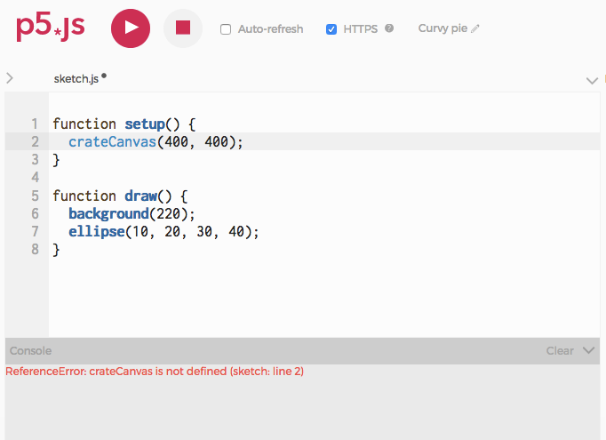

Vormen en kleuren
Deze tutorial helpt je door de eerste stappen om je eerste p5.js schets te maken.
Je eerste sketch
Ok, klik maar op de 'play' knop hieronder.
Gefeliciteerd! Je hebt een rechthoek getekend in p5.js. Of, nou ja, de code stond al klaar voor je..
Hoe werkt dit nu precies?
- p5.js werkt met een assenstelsel. De X-as loopt van links naar rechts, de Y-as van boven naar beneden en de eenheden zijn natuurlijk pixels.
- p5.js laat in de editor twee standaard functies zien,
setup()endraw(). Hierin schrijf je je code. Alles in setup() wordt één keer uitgevoerd, namelijk als je je programma start, alles in draw() wordt herhaaldelijk uitgevoerd, normaal gesproken 60 keer per seconde want de framerate in p5.js staat standaard ingesteld op 60fps. createCanvas(300, 300);enrect(20, 20, 80, 60);noemen we function calls. p5.js heeft een heleboel ingebouwde functies die verschillende taken kunnen uitvoeren, zoals bijvoorbeeld vormen op het scherm tekenen of je tekeninstellingen aanpassen. Het leren programmeren in p5.js is voornamelijk het leren gebruiken van deze commando's en ontdekken wat ze doen. DecreateCanvasfunctie stelt de grootte van je tekening in, en derectfunctie tekent zoals je ziet een rechthoek op het scherm.rectis de naam van de functie. Functienamen worden altijd direct gevolgd door twee haakjes; tussen deze haakjes kunnen (en soms moeten) een of meerdere waardes, gescheiden door komma's. Deze waardes heten de parameters van een functie. Iedere functie gebruikt de parameters op een iets andere manier en je moet dus ontdekken of opzoeken wat de parameters van een functie betekenen.- Boven de
rectzie je waar elke parameter van de functie voor staat. X positie, Y positie, breedte en hoogte (je ziet 2 slashes voor deze code staan, en de tekst kleurt grijs. Dat noemen we een 'comment', dwz. deze code wordt niet uitgevoerd, het staat er alleen als hulpmiddel). De waarden in de parameters van je functie kun je dus aanpassen om rechthoeken (of vierkanten) van verschillende grootte op verschillende posities te tekenen. Probeer maar en klik weer op Play om de code uit te voeren.
Je kan een enorme lijst met alle p5.js functies vinden op de p5.js referentiepagina (Iedere programmeertaal heeft ergens een referentielijst staan met de ingebouwde functies). Voor nu gaan we alleen nog aan de slag met de meest simpele functies die vormen op het scherm tekenen. Later zullen we ook andere functies gaan gebruiken die meer interessante dingen kunnen.
Vormen tekenen
p5.js heeft verschillende ingebouwde functies om geometrische vormen te tekenen.
Als je je vormen maar één keer wilt tekenen kun je de noLoop() functie gebruiken in setup(). De draw() functie wordt dan maar één keer uitgevoerd ipv. continu.
Voor een ellips gebruik je ellipse(), voor een lijn line() en voor een driehoek triangle() In de comments zie je de betekenissen van de parameters.
Kijk wat er gebeurt als je wat getallen verandert. En misschien valt het je op dat de vormen worden getekend in de volgorde waarin de functies worden aangeroepen. De volgorde is dus heel belangrijk bij het schrijven van een algoritme. Probeer maar eens wat functies in een andere volgorde te zetten.
Je ziet dat de ellipse en de rect dezelfde x- en y-positie hebben, toch worden ze op een ander plek getekend. Dat komt doordat de ellipse standaard vanuit het middelpunt getekend wordt, terwijl de rect standaard vanuit de linkerbovenhoek getekend wordt. Maar dit kun je instellen. Als je wilt dat de rechthoek ook vanuit het middelpunt getekend wordt, roep je de functie rectMode(CENTER) aan. Dit is een instelling in p5js, dwz. je programma behoudt deze instelling totdat je hem weer aanpast.
Je kunt ook een rechthoek tekenen met afgeronde hoeken door een vijfde parameter rect() te gebruiken.
Om een segment van een ellips of cirkel te tekenen kun je de functie arc() gebruiken met ingebouwde waarden voor pi.
Probeer de waarden van de segment parameters maar eens aan te passen om erachter te komen waar je begint en eindigt met tekenen.
Andere vormen
Er zijn nog meer functies om vormen te maken. Elke functie werkt weer net iets anders en de parameters betekenen ook vaak weer iets anders. Dat kan je allemaal opzoeken in de referentiepagina's. Daar staat per functie informatie en de instructie hoe ze te gebruiken. Hier vind je alle functies voor vormen in p5js: p5js.org/reference/#group-Shape
Kleuren
De background() functie bepaalt de achtergrondkleur voor de hele sketch.
Roep deze als eerste aan in de draw() functie want dat moet gebeuren voordat je je vormen tekent.
Je ziet dat hier voor de background maar 1 parameter is ingevuld. Die waarde bepaalt de grijswaarde van de achtergrond. 0 is zwart en 255 is wit; ergens ertussenin geeft een grijswaarde.
Als je de background functie met drie parameters aanroept dan kun je een RGB waarden invullen. De parameters corresponderen met de Rood, Groen en Blauw waarde.
Een goede plek om RGB kleurencodes te vinden is hier: www.w3schools.com/colors/colors_rgb.asp
Ook kun je HEX kleuren gebruiken. Je roept de background dan weer aan met 1 parameter, en de hex kleur schrijf je dan tussen apostrofs.
HEX kleurencodes vindt je bijvoorbeeld hier: www.w3schools.com/colors/colors_hexadecimal.asp
En dan kun je ook nog HSB kleuren gebruiken. HSB staat voor Hue (tint, 0-360), Saturation (verzadiging, 0-100), Brightness (helderheid, 0-100). Dit kleurenmodel is erg handig als je bijvoorbeeld alleen pastelkleuren in je sketch wilt gebruiken, of alleen lichte of donkere of harde kleuren. Je kunt dan de waardes voor S en B hetzelfde houden en alleen de H waarde veranderen. Om HSB kleuren te gebruiken moet je wel eerst de colorMode() aanpassen. Dit is net als rectMode() een instelling in p5js.
Een HSB color picker vind je hier: codepen.io/HunorMarton/details/eWvewo
Hier vind je een kleurenpalet generator waarmee je bij elkaar passende kleuren kunt genereren om te gebruiken in je projecten: coolors.co/generate (klik de spacebar voor nieuwe kleuren)
Fill en stroke
Je vormen en lijnen die je tekent kun je natuurlijk ook een kleur geven. De vulkleur kan je bepalen met de fill() functie. De parameters voor de kleuren werken op dezelfde manier als voor de background() functie. De vulkleur kan je bepalen met de fill() functie, en de lijnkleur met de stroke() functie.
Hierbij is de volgorde weer van belang. fill() en stroke() zijn ook weer instellingen in p5js, je stelt dus eerst de vulkleur en/of lijnkleur in, daarna teken je de vorm. Als je voor een volgende vorm bijvoorbeeld een ander vulkleur wilt gebruiken dan stel je de fill() opnieuw in.
Dan is er nog een functie strokeWeight() die de dikte van de lijn bepaalt. Ook dit is een instelling.
Mocht je helemaal geen lijn om je vorm willen bestaat er ook nog de functie noStroke() Probeer deze maar eens in de onderstaande code ergens toe te passen. En noFill(), probeer die ook meteen maar.
Kleuren mengen
Je kunt de vulkleur of lijnkleur ook transparant (doorzichtig) maken door een extra parameter te gebruiken in fill() of stroke(). De transparantie loopt van 0-255, waarbij 0 volledig transparant is en 255 volledig gevuld. Op deze manier kun je dus kleuren mengen om nieuwe kleuren te verkrijgen, zie onderstaand voorbeeld.
En dan zijn er ook nog verschillende manieren waarop je de kleuren kunt mengen, dat heet de blendMode(). Alle opties vind je hier: p5js.org/reference/#/p5/blendMode. Probeer maar eens te experimenteren met de verschillende blendModes in onderstaand voorbeeld.
Als er iets fout gaat.
Programmeren is een precies werkje, en het is heel makkelijk om een fout te maken in de syntax (de regels hoe de opdrachten gegeven moeten worden, zoals grammatica bij een reguliere taal). Zeker in het begin zal je heel veel syntaxfouten maken en een programma werkt vaak helemaal niet als je een foutje maakt bij het typen. Een docent kan zich ergeren of misschien een rode streep zetten door een "dt" fout, maar kan je werkstuk verder wel lezen en begrijpen. Een computer stopt bij de fout en weigert veelal het programma verder uit te voeren.
Maar als er iets fout gaat krijg je vaak wel een foutmelding, een error message. De foutmelding verschijnt in de "console". Hier het kleine vakje onderaan de code editor.
Als je het probleem niet kan vinden raak dan niet meteen in paniek! De foutmelding geeft je een aantal aanwijzingen. Het nummer aan het begin van de foutmelding is het regelnummer waar p5.js denkt dat de fout zit (en als dat niet het geval is zit de fout daar meestal wel bij in de buurt). En de foutmelding geeft je vaak wel een idee wat voor fout er gemaakt is. Alleen zal je wel moeten wennen aan de omschrijving die de computer geeft aan de fout.

Deze foutmelding laat zien dat er een probleem is in regel 2: per ongeluk heb ik crateCanvas geschreven in plaats van createCanvas, en JavaScript helpt mij door te vertellen dat het geen idee heeft wat crateCanvas is. (Dat is het geval wanneer JavaScript zegt dat iets “is not defined,”. JavaScript kent alleen opdrachten, variabelen en functies die bepaald zijn door iemand, jijzelf of iemand anders in een library. Maar niemand heeft nog de functie crateCanvas gemaakt, hij bestaat niet dus loopt je programma vast.
Je werk delen
Vanuit de webeditor kun je je werk direct delen. In het File menu van de webeditor, selecteer je Share. Dan krijg je een drietal keuzes:
- Embed: Als je al een website hebt kan je hoogstwaarschijnlijk dit codeblok kopiëren en en plakken in je eigen blog of website. (De code is een
iframe, dat is een HTML tag dat de webbrowser content kan laten zien van een andere website midden op de pagina van een andere site). - Fullscreen: Deze URL (webadres) leidt naar een versie van je sketch die alleen de output van de code laat zien, dus de "preview" op een verder leeg scherm.
- Edit: Dit linkt naar je sketch in de webeditor. Zo kan je ook de code laten zien die je geschreven hebt.